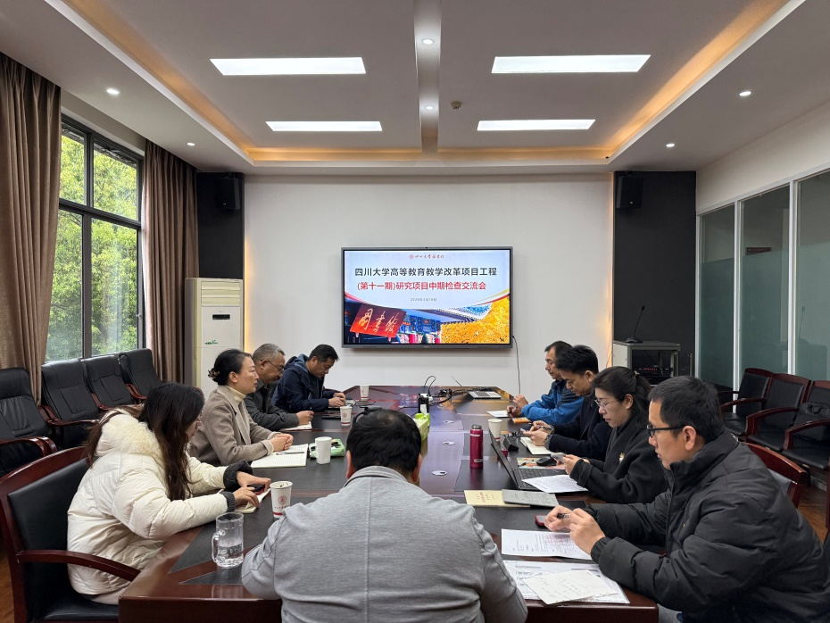

教务处 · 教学通知
图书馆举行高等教育教学改革项目工程（第十一期）研究项目中期检查交流会
发布时间：2026-03-26 10:32:22
为 提 升 教改项目的管理水平， 高质量 推进项目 研究进程， 图书馆于2026年3月18日上午在工学图书馆五楼会议室召开高等教育教学改革项目（第十一期）中期检查交流会。公共管理学院院长夏志强、图书馆馆长兰利琼、图书馆副馆长张盛强、教务处蒋明霞老师等4位专家应邀担任评审。项目负责人及部分项目成员参加汇报交流。 会上，各项目组负责人依次汇报了研究进展情况，围绕项目拟解决的问题、中期已完成内容、阶段性成果、成果创新点与应用、下阶段计划等进行了汇报。 专家 结合汇报 内容，对各项目的研究进展、问题意识、研究逻辑、理论建构、方法适配等提出了意见 与 建议，并形成了中期检查意见。 围绕图书馆人才培养模式创新，本次交流会通过对四个项目进行中期检查 ，有效推动了图书馆在新兴技术背景下育人模式的理性探索与实证研究，为构建数智时代图书馆支撑一流人才培养的新范式提供了理论 探 索 和 实践案例。
